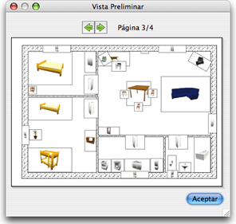

| Imprimiendo la casa | |||
Para imprimir la casa elige Archivo > Imprimir.... Por defecto, Sweet Home 3D imprime la lista de mobiliario, el plano y la vista 3D actual, usando los valores por defecto para papel
tamaño, márgenes y orientación.
El Panel de configuración de página, puedes cambiar el tamaño del papel y la orientación haciendo clic en botón Formato Pagína. Puedes elegir tambien si la lista de mobiliario, el plano y la vista 3D view Se imprimirán o no. Para ver la vista preliminar, elige Archivo > Vista Preliminar....  En el panel de vista preliminar, puedes ver como será impresa tu casa página a página. Para cambiar de página, haz clic en las flechas de arriba del panel o en las flechas del teclado. |

|